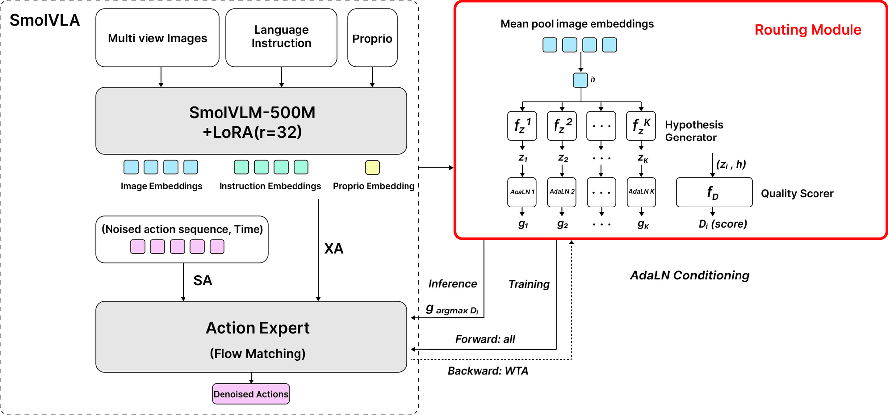
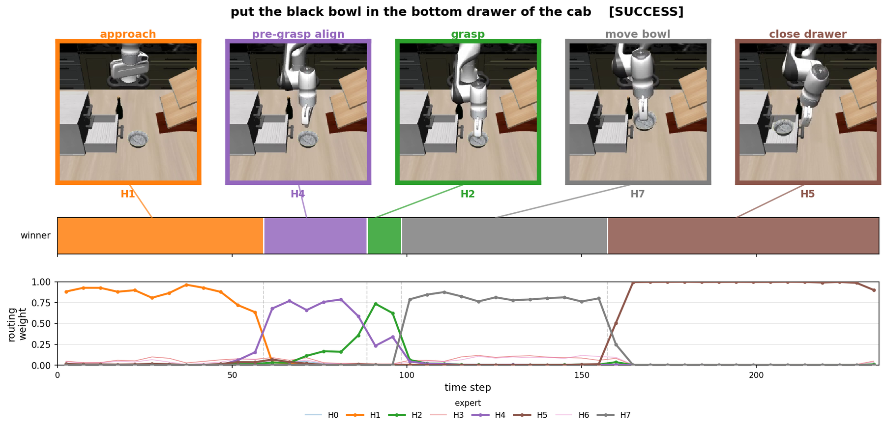
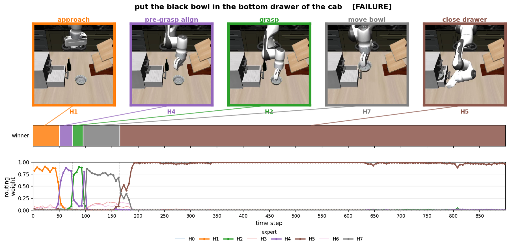
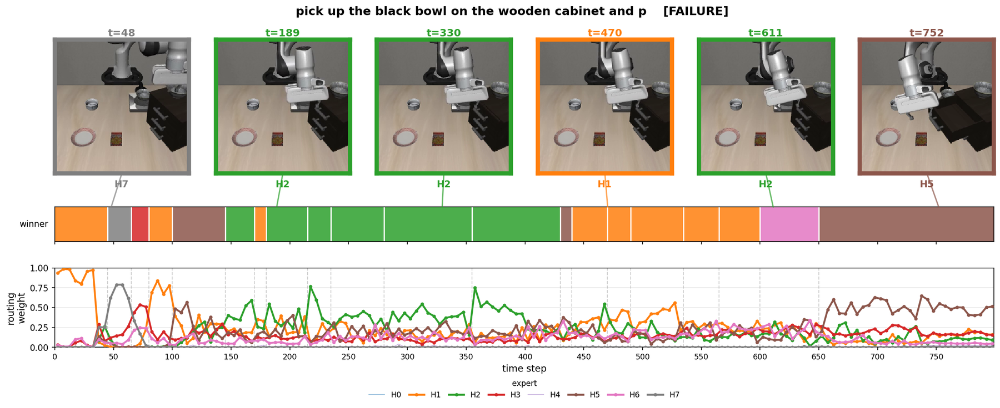
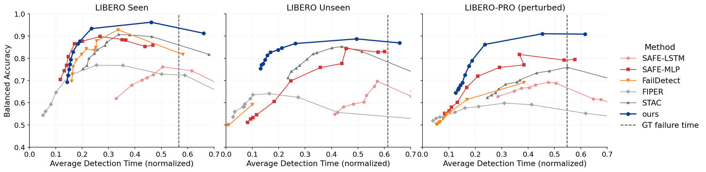

Problem
The goal is real-world deployment, where mid-task failures are safety-critical. A VLA needs a mid-task monitor: act in unseen environments, and stop only when it is failing.
| Prior failure detectors | This work | |
|---|---|---|
| External detector | Separate VLM | None |
| Failure data | Required | Success-only |
| Distribution shift | Degrades | Robust on unseen and perturbed tasks |
Idea
How does a human detect failure? The basal ganglia evaluate several action candidates in parallel and select one, or none. When that selection is impaired, two kinds of failure appear: stuck and unstable action selection.
I give a VLA the same kind of selection step, so that routing becomes an observable control signal, and I read those two failure signatures from it.
Method
- Route. SmolVLA plus a routing module that picks 1 of K hypotheses at every replanning step. The winner conditions the flow-matching action expert through AdaLN.
- Read two signals. Stuck means one expert dominates; unstable means low-confidence selection.
- Calibrate on successes. Both signals are z-normalized on successful episodes and accumulated over time. Conformal prediction sets the threshold, so the true-negative rate is at least 1 − α.
- dwellt
- same-expert run length → stuck
- Ht
- entropy of the routing weights → unstable
- St
- accumulated z(dwellt) + z(Ht); alarm when St > τ

Emergent phase decomposition: a success and the two failure signatures



Results
LIBERO-10 with 7 seen and 3 unseen tasks, plus LIBERO-PRO perturbations. K = 8, three seeds, five baselines (SAFE-MLP, SAFE-LSTM, FailDetect, FIPER, STAC).
- Detects failure early and accurately. Highest balanced accuracy on all splits: 94.4 / 88.2 / 90.1 on seen / unseen / perturbed, against 87.5 / 83.7 / 80.9 for the best baseline on each.
- Separates failing from successful episodes. AUROC leads on unseen (+6) and perturbed (+4), and trails SAFE-MLP only on seen.
- Does not impair the policy. Routing attaches without harming success: 93.9 on LIBERO, against 92.8 for SmolVLA + LoRA.

Full tables
| Method | Seen | Unseen | PRO |
|---|---|---|---|
| SAFE-LSTM | 57.4 | 55.8 | 52.8 |
| SAFE-MLP | 86.9 | 83.7 | 80.9 |
| FailDetect | 87.4 | 52.8 | 61.9 |
| FIPER | 60.8 | 57.7 | 55.7 |
| STAC | 87.5 | 80.3 | 73.1 |
| Ours | 94.4 | 88.2 | 90.1 |
| Method | Seen | Unseen | PRO |
|---|---|---|---|
| SAFE-LSTM | 62.3 ±4.3 | 39.2 ±10.1 | 59.2 ±7.4 |
| SAFE-MLP | 88.0 ±9.2 | 78.2 ±11.5 | 68.9 ±4.5 |
| FailDetect | 86.0 ±7.1 | 53.1 ±9.4 | 57.8 ±4.2 |
| FIPER | 73.8 ±7.6 | 62.7 ±8.5 | 51.7 ±3.1 |
| STAC | 81.6 ±5.7 | 75.8 ±6.0 | 51.2 ±0.3 |
| Ours | 81.9 ±12.4 | 84.2 ±8.6 | 73.1 ±0.8 |
| Model | LIBERO | LIBERO-10 | LIBERO-PRO | LIBERO-PRO-10 |
|---|---|---|---|---|
| SmolVLA (frozen) | 87.3 | 65.0 | 17.0 | 6.5 |
| SmolVLA + LoRA | 92.8 | 82.6 | 30.5 | 9.3 |
| Ours (K = 8) | 93.9 | 84.0 | 30.3 | 17.2 |
The routing module did not dramatically improve success, but it dramatically improved failure visibility.
Takeaways
- Observable control signal. Routing gives an arbitration trace for free. Dwell and entropy become a built-in failure signal, with no auxiliary detector and no extra forward pass.
- Deployment value. Failure flags enable stop, fallback or human handoff on long-horizon, unseen and perturbed tasks, complementing improvements in success rate.
Limitations
- Not plug-and-play. Other runtime failure detectors attach to an existing policy. This one changes the VLA architecture itself, adding a router and retraining the policy, only to make failure observable. I could not justify that cost strongly enough.
- Strongest under shift only. On seen tasks a supervised probe (SAFE-MLP) separates failures better.
- Narrow evaluation. One routing policy on the LIBERO simulation benchmarks, and task success is non-monotonic in K.
Next. Attach the monitor to pretrained VLAs through routing fine-tuning, which would ease the first limitation, and close the loop: detect failure from the trace, then re-route or recover.